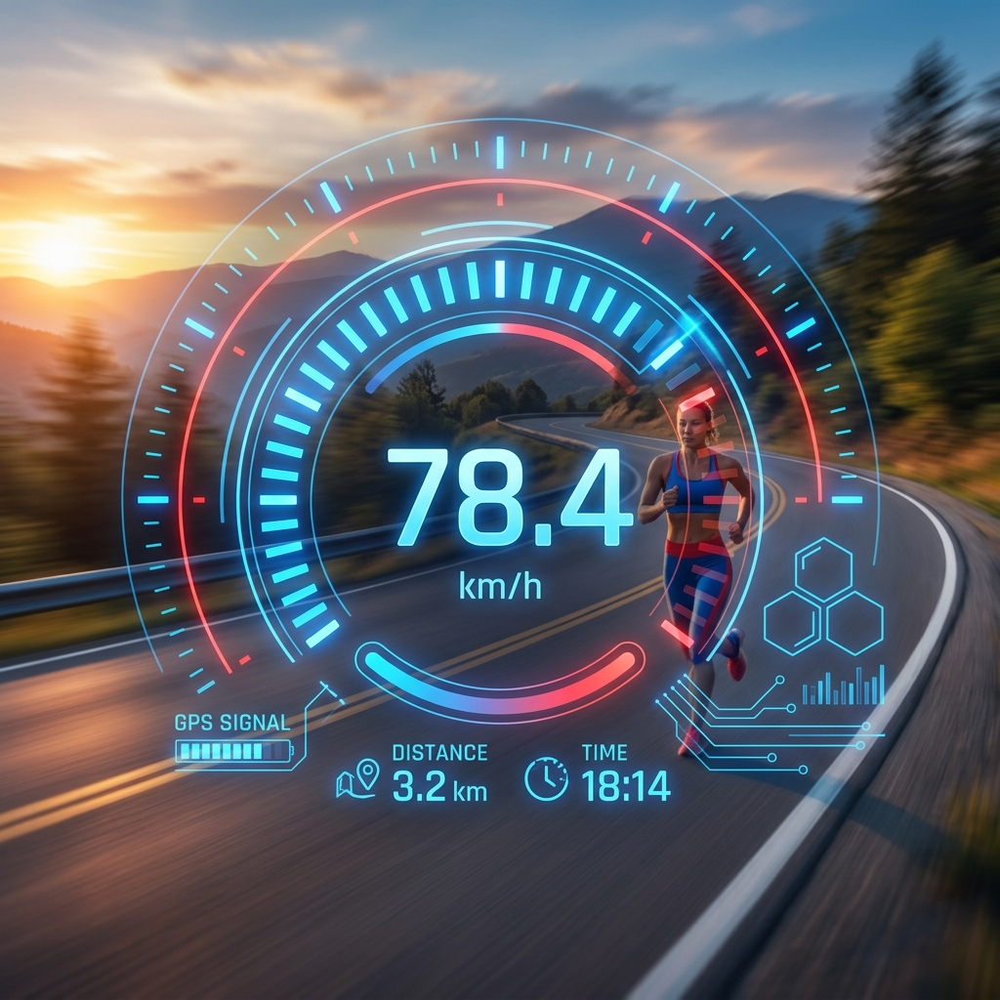

How to Check Your Moving Speed Online Using GPS
A comprehensive guide on how GPS speed tracking works, mobile speed test tools, and why browser-based speedometers are the best choice for privacy.
Read Full Article →Compruebe su velocidad de movimiento en tiempo real con precisión mediante GPS para cualquier vehículo o actividad.
Por favor, activa el GPS de tu teléfono para que esta herramienta funcione
Nuestra herramienta principal es versátil, pero estas vistas especializadas ofrecen experiencias optimizadas para actividades específicas.
Pantalla de alto contraste optimizada para montaje en el tablero y precisión a alta velocidad.
Seguimiento sensible diseñado para que atletas y corredores controlen el ritmo en tiempo real.
El panel digital perfecto para tu manillar, que muestra la velocidad y el seguimiento de la distancia.
¿Alguna vez te has preguntado “cuál es mi velocidad ahora mismo?” Ya sea que estés caminando, trotando, corriendo, en bicicleta, conduciendo o viajando en un vehículo, una herramienta de prueba de velocidad de movimiento te ayuda a medir instantáneamente tu movimiento en tiempo real utilizando GPS y fórmulas inteligentes de cálculo de velocidad.
Nuestra herramienta My Moving Speed Test está diseñada para cualquier persona que quiera comprobar su velocidad de movimiento en línea de forma rápida y precisa. Funciona como un rastreador de velocidad en vivo, velocímetro en línea, calculadora de velocidad al caminar, calculadora de velocidad al correr e incluso una herramienta de prueba de velocidad de vehículos, todo en un solo lugar.
En esta guía, aprenderás cómo funciona la velocidad de movimiento, cómo calcularla, cómo la miden los verificadores de velocidad en línea y cómo usar una herramienta de prueba de velocidad de movimiento gratuita de manera efectiva.
La velocidad de movimiento se refiere a qué tan rápido te trasladas de un lugar a otro a lo largo del tiempo. Se aplica a:
En palabras sencillas, si alguna vez te has preguntado: ¿Cuál es mi velocidad actual? ¿A qué velocidad voy? ¿Qué tan rápido me muevo? ¿Mi velocidad en km/h? Entonces estás tratando de medir tu velocidad de movimiento.
Una herramienta de prueba de velocidad de movimiento generalmente mide tu velocidad utilizando uno de estos métodos:
La mayoría de las herramientas modernas de seguimiento de velocidad utilizan el GPS para calcular tu ubicación a lo largo del tiempo y determinar la velocidad. Ideal para: caminar, correr, conducir, andar en bicicleta, viajar en tren/autobús.
Las calculadoras de velocidad manuales utilizan la fórmula de velocidad básica: Velocidad = Distancia / Tiempo.
Ejemplo: Distancia = 10 km, Tiempo = 30 minutos (0,5 horas). Velocidad = 10 / 0,5 = 20 km/h.
Este método se utiliza en muchas calculadoras de velocidad por distancia y tiempo y calculadoras de fórmulas de velocidad.
Una calculadora de velocidad de movimiento en línea te ayuda a:
Actúa como un velocímetro digital en línea directamente en tu navegador.
Nuestra herramienta de verificación de velocidad puede funcionar como:
Si te preguntas cómo comprobar mi velocidad de movimiento en línea, sigue estos pasos:
Visita el sitio web de verificación de velocidad de movimiento.
Se requiere permiso de GPS para un seguimiento preciso.
Camina, corre, conduce o viaja normalmente.
La herramienta muestra la velocidad actual, promedio y máxima en km/h o mph.
La velocidad promedio al caminar para la mayoría de los adultos es de 4 a 5 km/h (2,5 a 3,1 mph).
Factores que afectan la velocidad al caminar:Utiliza un rastreador de velocidad GPS en línea o una calculadora de velocidad al caminar para responder: ¿A qué velocidad camino?
Los velocistas de élite pueden superar los 35–45 km/h en ráfagas cortas. La mayoría de los corredores recreativos corren a 8–12 km/h.
Una prueba de velocidad de coche comprueba la velocidad de tu vehículo mediante GPS cuando tu tablero está roto o necesitas verificación.
Nuestra herramienta funciona para coche, bicicleta, tren y autobús. Puedes usarla como un velocímetro en línea mientras viajas.
Para calcular la velocidad manualmente: v = d / t (v=Velocidad, d=Distancia, t=Tiempo).
Si viajas 120 km en 2 horas, entonces Velocidad = 120 / 2 = 60 km/h.
1 km/h = 0,27778 m/s | 1 mph = 1,60934 km/h
Una prueba de velocidad por GPS proporciona mediciones en tiempo real sin cálculos manuales. Los beneficios incluyen un seguimiento preciso en vivo para todos los tipos de movimiento en dispositivos móviles.
Los usuarios quieren un verificador de velocidad instantáneo sin descargar una aplicación para responder “¿qué tan rápido me muevo ahora mismo?”
La herramienta My Moving Speed Test es una de las formas más fáciles de medir la velocidad en línea. Ya sea que necesites una prueba de velocidad en vivo o una calculadora de fórmula de velocidad, esta herramienta ofrece todo en un solo lugar.
Utiliza la fórmula: Velocidad = Distancia ÷ Tiempo. También puedes usar una calculadora de velocidad de movimiento basada en GPS para una medición automática.
La velocidad de movimiento se refiere a qué tan rápido se desplaza un objeto o persona en una distancia determinada durante un tiempo determinado.
La velocidad promedio al caminar es típicamente de 4 a 5 km/h para adultos.
Utiliza una herramienta de seguimiento de velocidad GPS o una calculadora de velocidad al caminar en tu teléfono.
Divide la distancia recorrida por el tiempo empleado, o utiliza una calculadora de velocidad al correr.
Los velocistas de élite pueden alcanzar los 35–45 km/h brevemente.
La velocidad normal al correr suele ser de 8 a 12 km/h.
Utiliza un velocímetro GPS en línea o un sitio web de seguimiento de velocidad.
Habilita el GPS en tu teléfono y utiliza una herramienta de seguimiento de velocidad en vivo.
La fórmula de la velocidad es: Velocidad = Distancia / Tiempo.
Opiniones de expertos, guías y consejos sobre el seguimiento de la velocidad por GPS y las herramientas web modernas.